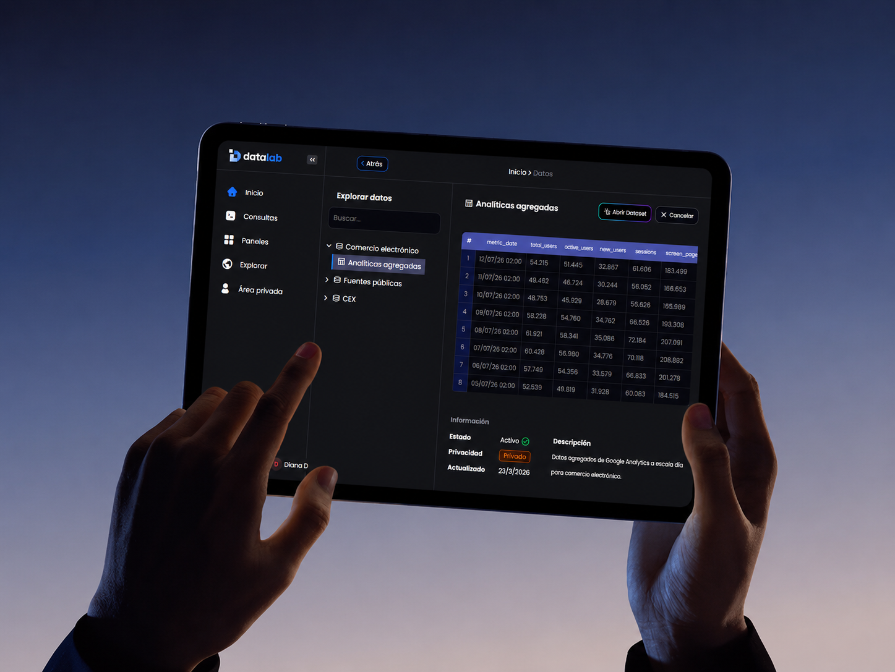
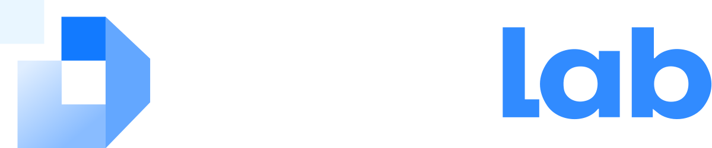
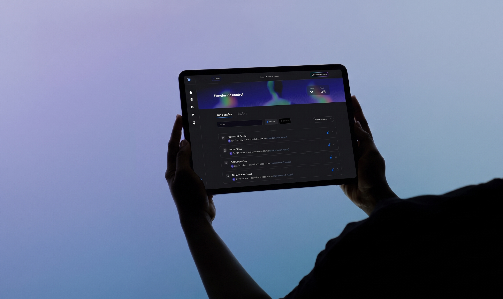
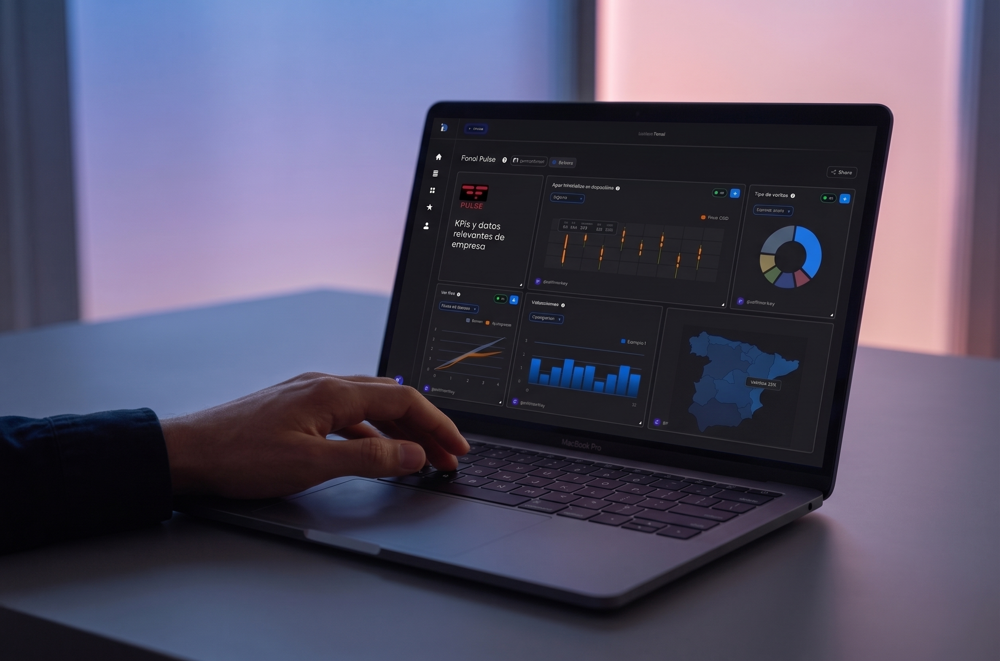
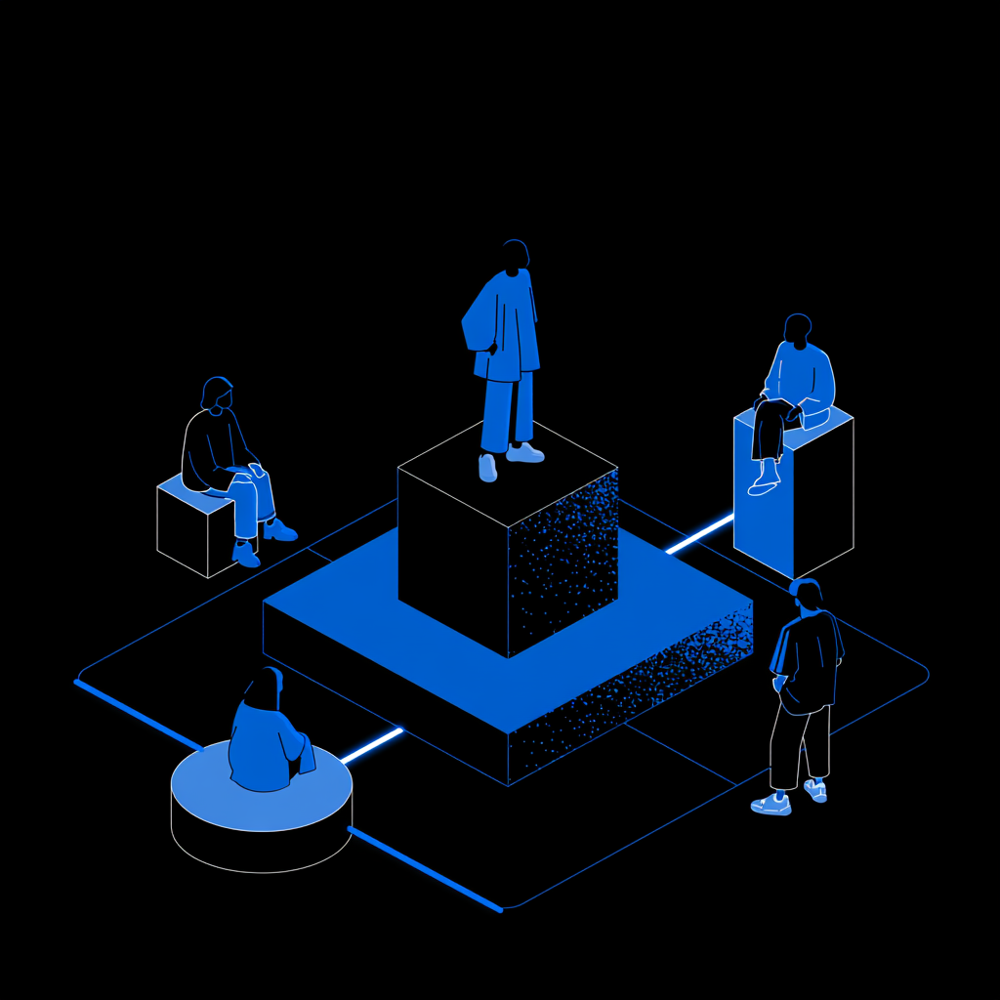
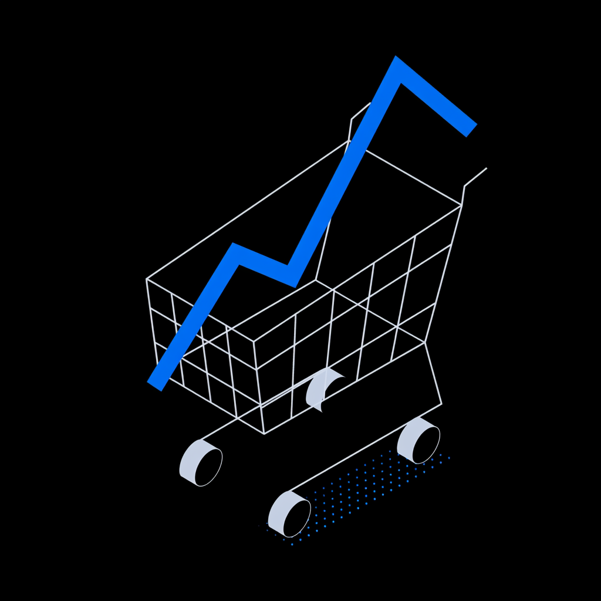
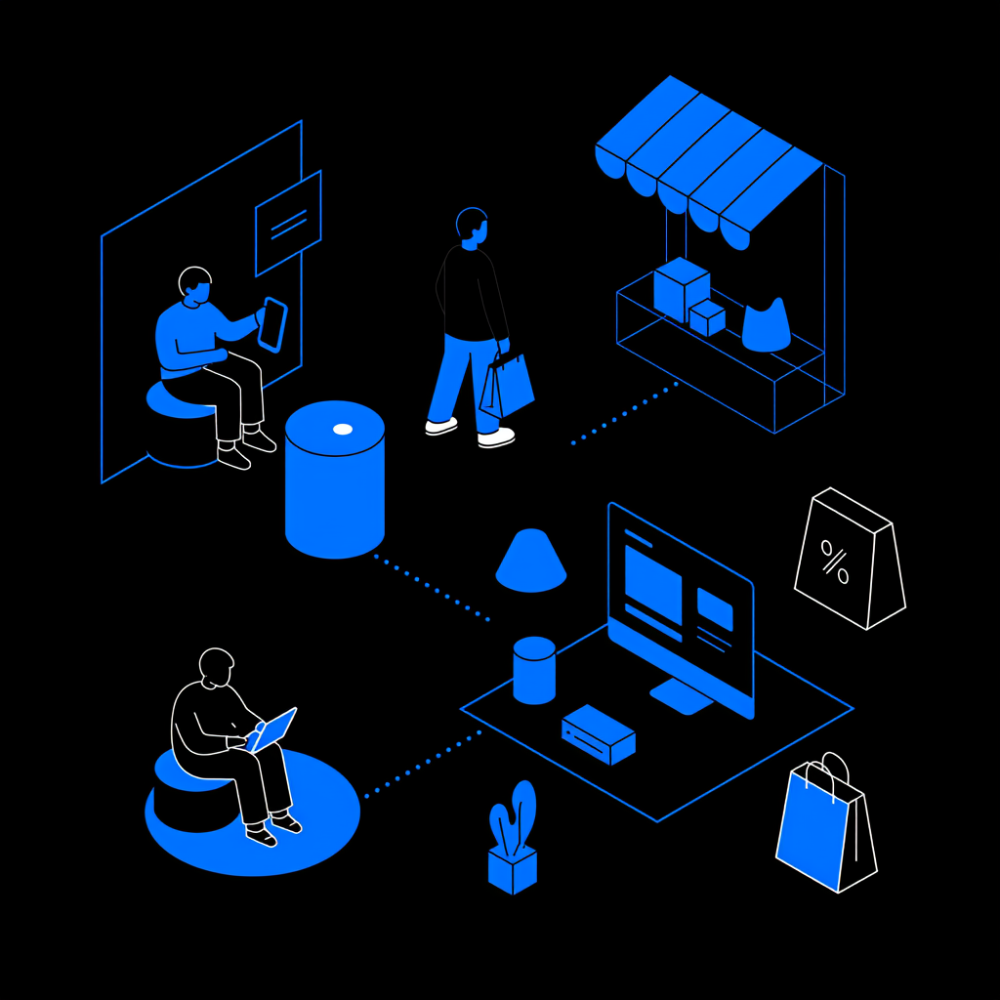
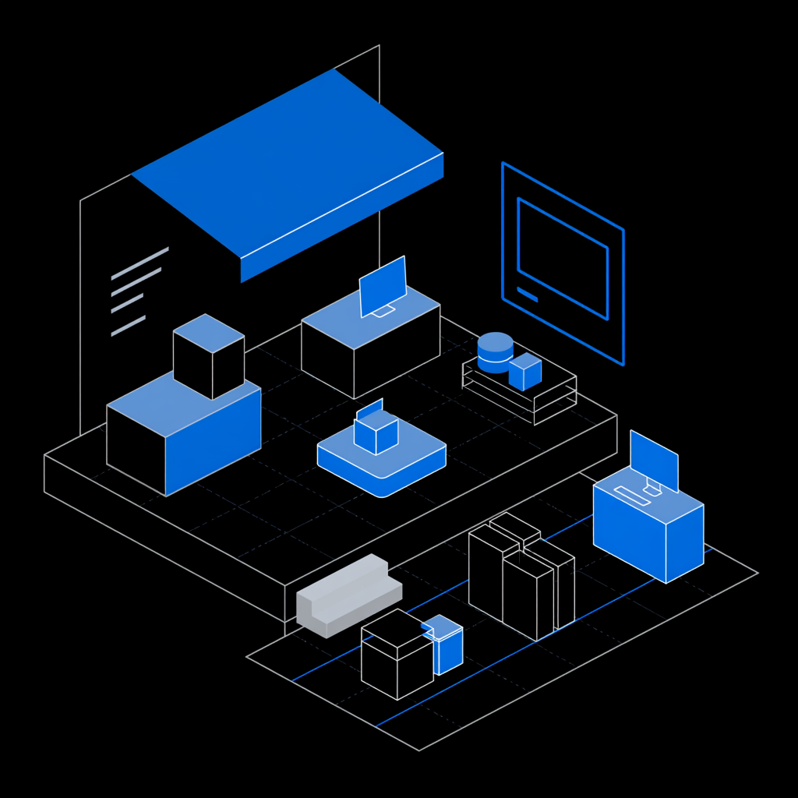
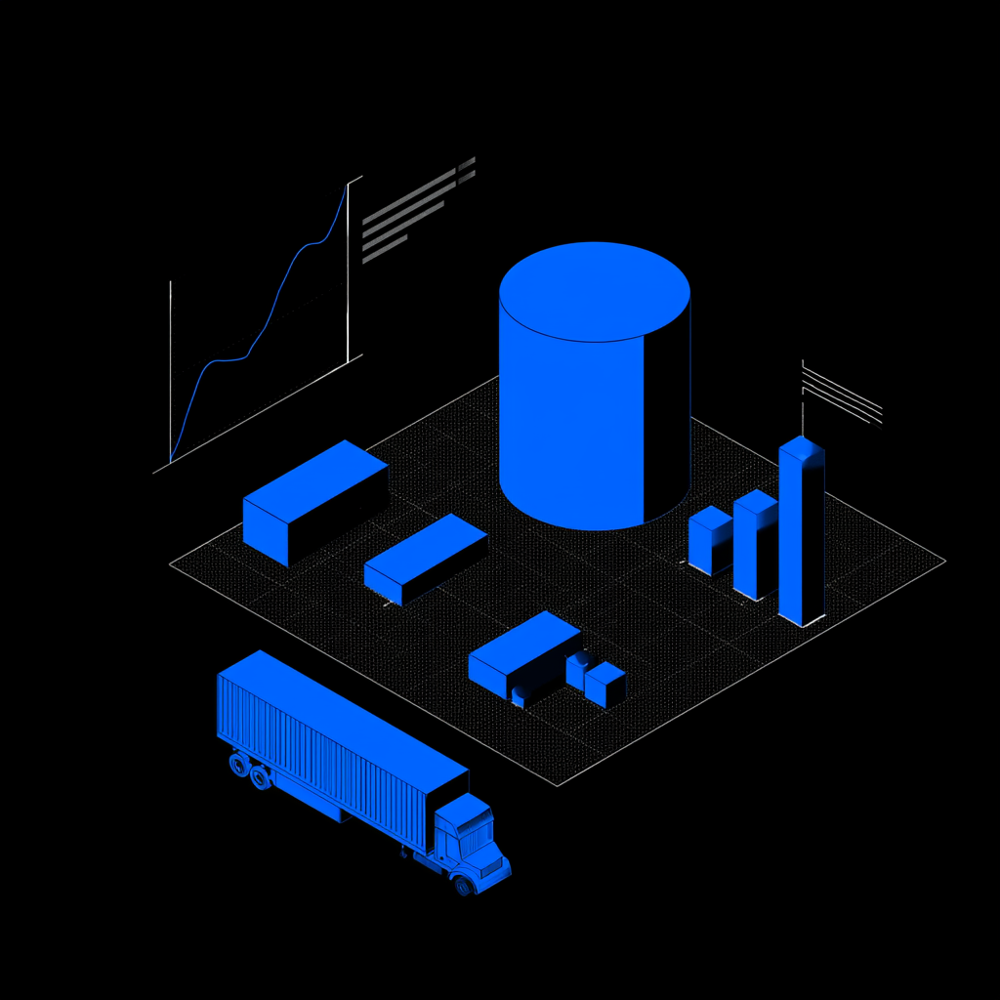

01 — Repository
Data repository
Storage, updating, normalization and anonymization of sector data.

The first data space specialized in ecommerce in Spain, and the third-largest by users nationwide.
DataLab lets companies, institutions and technology partners work on anonymized, governed and interoperable data — creating shared knowledge, sector benchmarks, market analysis and new digital services built on real data.

Storage, updating, normalization and anonymization of sector data.

Exploration through queries, natural language or visual tools.

Reusable dashboards to visualize trends, indicators and opportunities.

Compare an organization's performance against its sector.

Detect real trends in the ecommerce market.

Create new products and services built on data.

Enable collaboration between companies with control and traceability.

Democratize access to sector intelligence for SMEs and large companies.
DataLab's model is built on anonymized data, traceability, access control and clear usage rules. Collaboration between organizations is possible without compromising privacy, confidentiality or control over the information.

DataLab connects organizations, datasets and knowledge to create a shared infrastructure that lets everyone compete better, innovate faster and decide with more context.